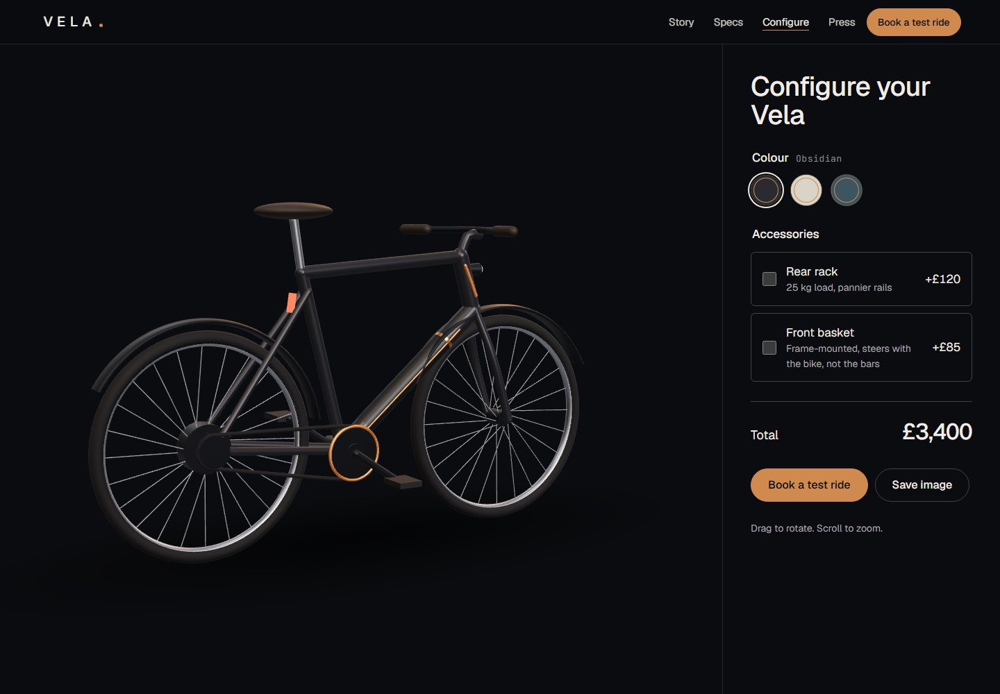

Design exploration / Immersive storytelling
Vela
An e-bike launch told through scroll-driven assembly, a city ride, and a 3D configurator.

The idea behind the interface.
A launch microsite for a fictional e-bike, designed to let the product tell its own story. Seven chapters move from a bold opening to assembly, a turntable, a city ride, specifications, colourways, and a test-ride invitation. The supporting pages turn that story into something visitors can explore and configure.
Inside the build
- A shared scene engine maps scroll progress to image sequences, video, and product callouts, loading the next scene progressively.
- A Three.js configurator changes colour, rack, and basket options, with image sharing and a lighter model for smaller devices.
- A complete static reading mode supports reduced motion and low-memory devices; booking routes handle shops, time slots, and confirmations.
Scope & context
Concept project. Product specifications, shops, and imagery are fictional or procedurally generated. Real confirmation-email delivery requires service configuration.